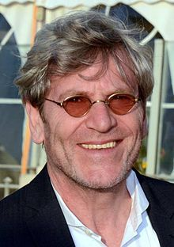
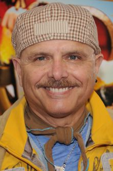
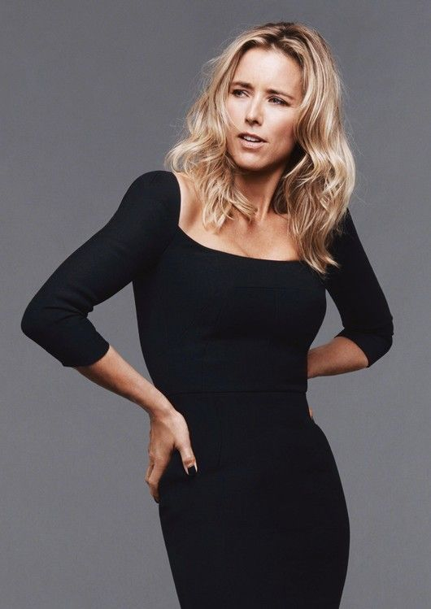

Guias para navegar no site

Tchéky Karyo, nascido em 4 de outubro de 1953, é um ator e músico francês de origem turca. Começando sua carreira como ator no palco em obras clássicas e contemporâneas, ele começou a trabalhar como ator de personagens em filmes na década de 1980. Ele atuou em vários filmes de Hollywood e diretores franceses, incluindo Luc Besson .
Karyo ingressou no Teatro Nacional de Estrasburgo , onde atuou em peças contemporâneas e clássicas. Ele encontrou sucesso em filmes franceses a partir da década de 1980, primeiro como ator de personagem. Mais tarde, ele apareceu em papéis principais em vários filmes notáveis, como O Urso, no qual interpretou um dos caçadores, e La Femme Nikita, do diretor Luc Besson , no qual interpretou o mentor de espionagem da heroína. Ele apareceu em muitos filmes de Hollywood , muitas vezes retratando um personagem francês, da mesma forma que Jean Reno . Seus créditos no cinema incluem Nostradamus , de 1994, no qual ele interpreta o famoso profeta francês , e Bad Boys , de 1995, ao lado de Will Smith e Martin Lawrence , no qual ele interpreta um criminoso chamado Fouchet.

Joe Pantoliano, nascido em Hoboken, Nova Jersey, 12 de setembro de 1951, é um ator estadunidense conhecido principalmente pela sua atuação como Cypher em Matrix e o mafioso Ralph Cifarreto em Os Sopranos, papel que lhe rendeu um Emmy.
Ele começou sua carreira no teatro, jogos em Negócio Arriscado para o lado do jovem Tom Cruise e cadeias sob a direção de Steven Spielberg no Império do Sol. Em 1995, ele interpretou o papel de um angustiante capitão da polícia no filme Bad Boys, de Michael Bay. No mesmo ano, ele conheceu os Wachowski, para seu primeiro filme, Bound. É em outro filme que ele vai adquirir fama internacional, já que fará o personagem de Cypher no filme Matrix. Podemos vê-lo novamente em Bad Boys 2, depois no blockbuster Daredevil. Finalmente, ele também é conhecido por ter desempenhado o papel do excêntrico mafioso Ralph Cifaretto nas temporadas 3 e 4 da série Os Sopranos. Esse papel também lhe permitirá ganhar um prêmio Emmy de " Melhor Ator Coadjuvante " em uma série dramática em 2003.

Téa Leoni começou a carreira de atriz em seriados de televisão.Desde então, a atriz tem aparecido em seriados e filmes variados.Os mais conhecidos são: Jurassic Park III (2001), Espanglês (2004) e As Loucuras de Dick & Jane (2005).
Em 1988, Leoni foi escalada como uma das estrelas de Angels 88. No ano seguinte, ela foi escalada como Lisa DiNapoli na novela diurna da NBC Santa Barbara. Em 1991, ela estreou no cinema com um pequeno papel na comédia Switch e mais tarde desempenhou outro pequeno papel em A League of Their Own (1992). De 1992 a 1993, Leoni estrelou com Corey Parker na curta sitcom da Fox, Flying Blind. Em fevereiro de 1995, ela apareceu no seriado Frasier, um spinoff de Cheers, como a noiva de Sam Malone (interpretado por Ted Danson ). Mais tarde naquele ano, ela conseguiu o papel principal na sitcom da ABC/NBC The Naked Truth , interpretando Nora Wilde, uma jornalista de tablóides. O show durou até 1998. Leoni teve o papel principal feminino no filme de comédia de ação Bad Boys de 1995, que foi um sucesso de bilheteria, arrecadando mais de US$ 141 milhões em todo o mundo.
Theresa E. Randle, nascida em 27 de dezembro de 1964, é uma atriz americana. Randle nasceu em Atlanta, Geórgia . Ela começou sua carreira de artista estudando dança (tradicional, moderna, jazz) e comédia. Ela entrou na Beverly Hills High School com um programa especial para os excepcionalmente talentosos. No final da faculdade, ela ganhou seu primeiro papel no Los Angeles Inner City Cultural Center e foi vista em comerciais . Ela também estava envolvida em atuar no palco. Os papéis teatrais incluem In Command of the Children , Sonata , 6 Parts of Musical Broadway e Fight the Good Fight.
Em 1983, ela apareceu em um vídeo de George Clinton , "Last Dance". Em 1987, ela teve sua primeira chance na tela grande com Maid to Order. Nos três anos seguintes, ela apareceu em pequenos papéis em filmes como Easy Wheels e Heart Condition (1990), com Denzel Washington. Ela continuou em pequenos papéis de diretores como Abel Ferrara ( King of New York [1990]) e Spike Lee ( Jungle Fever [1991] e Malcolm X [1992]). Randle também estrelou com Wesley Snipes no filme Sugar Hill (1994) e também apareceu com Eddie Murphyem Beverly Hills Cop III no mesmo ano. Ela co-estrelou em CB4 (1993) com Chris Rock, e Bad Boys (1995) com Will Smith e Martin Lawrence , mais tarde reprisando nas sequências Bad Boys II e Bad Boys for Life.